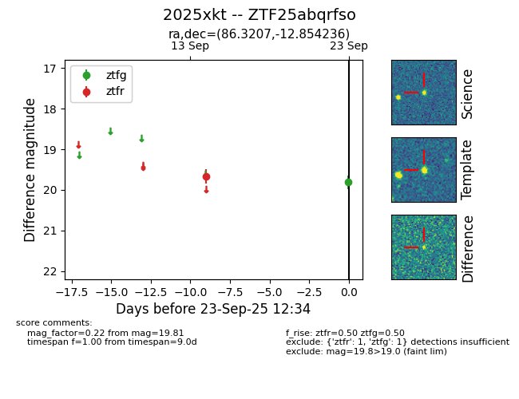

FINK: ZTF25abqrfso
Lasair: ZTF25abqrfso
ALeRCE: ZTF25abqrfso
TNS: 2025xkt
YSE: 2025xkt
ZTF25abqrfso (ztf,fink)
2025xkt (tns,yse)
equatorial (ra, dec) = (86.3207,-12.85424)
galactic (l, b) = (217.3035,-20.39207)

last ztfg=19.81, ztfr=19.66
1 ztfg, 1 ztfr detections